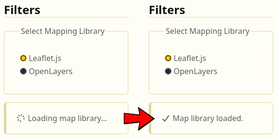

Welcome to BusBee 🐝
BusBee is your go-to platform for exploring bus routes, stops, and timetables across Greater Manchester. Whether you're a daily commuter or just planning a trip, BusBee has got you covered!
Features
- Interactive Map: Explore bus routes and stops on an interactive map powered by Leaflet and OpenLayers.
- Comprehensive Timetables: View detailed timetables for all bus routes in Greater Manchester.
- Mapping Library Toggle: Toggle between Leaflet and OpenLayers to experience different mapping libraries.
- Emission Visualisation: Visualise the CO, CO2 and NOx emissions across the Greater Manchester and the wider UK. If you didn't have a reason to take the bus before, maybe this will convince you!
- Basemap Variety: Choose from a variety of basemaps to enhance your mapping experience.
Getting Started
Using Leaflet and OpenLayers
This website uses both Leaflet and OpenLayers to demonstrate the mapping experience in each library. Within each page, you can toggle between the two libraries using the buttons provided at the top of the map section.
Stop Viewer
To view the different bus stops, routes and timetables, navigate to the "Bus Stops" page.
Pollution Visualisation
To explore emissions data, and get a deeper understanding of air quality due to transportation, navigate to the "Air Pollution" page.
Credits and References
Data Sources
- GM Bus Routes – Bus route map data for Greater Manchester.
- GM Bus Stopping Points – Locations of bus stops in Greater Manchester.
- Bus Stops and Schedules – Timetable and schedule data for bus stops.
Primary Libraries & APIs
- Leaflet – A Lightweight Open Source JavaScript library for interactive, mobile-friendly maps.
- OpenLayers – An Open Source JavaScript library to create dynamic web maps.
Additional Imports
- Dev.css – A tiny, simple, classless CSS framework inspired by new.css.